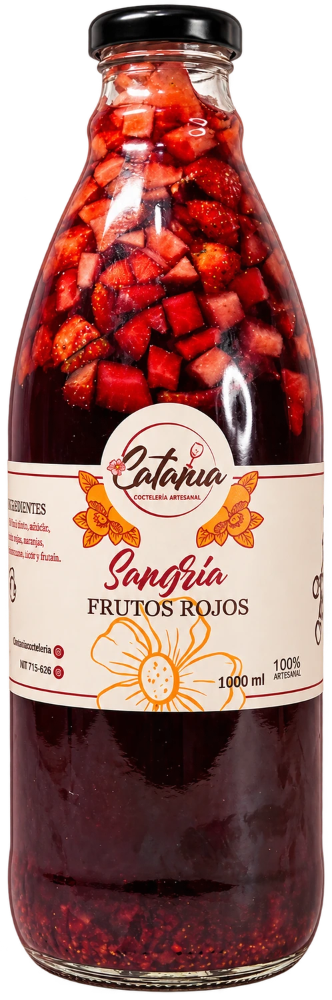

VISTA ANIMADA · CATANIA
Sumérgeteen elmomento.
Una invitación a explorar.
Un gesto para descubrir.
Y mil razones para brindar.

EL SABOR TIENE SU PROPIO RITMOVISTA ANIMADA · CATANIA
Una invitación a explorar.
Un gesto para descubrir.
Y mil razones para brindar.

EL SABOR TIENE SU PROPIO RITMOVista de movimiento.
El botón solo cambia el contador.